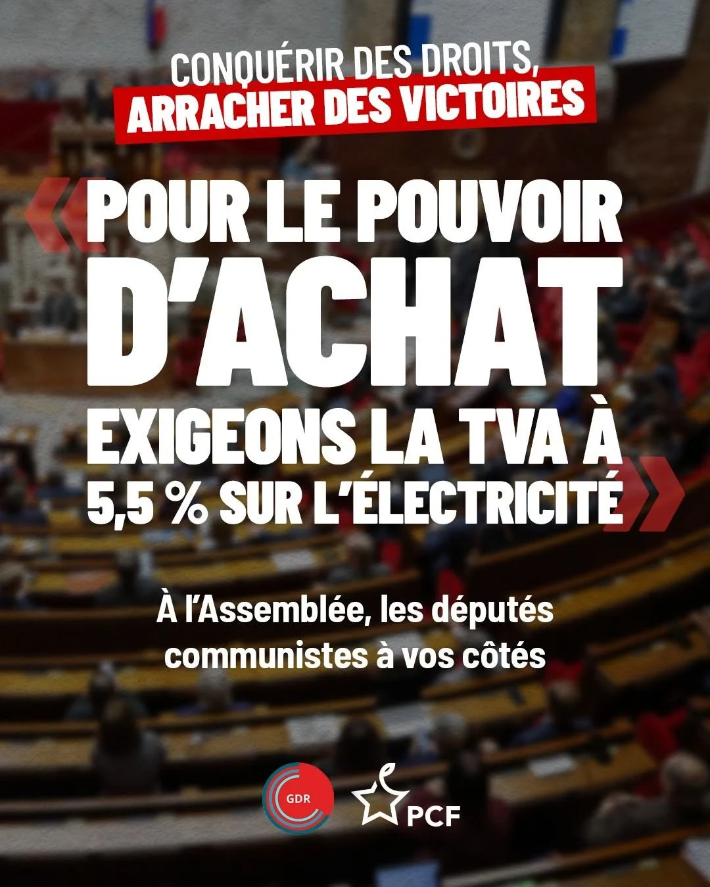

Publication relayée par le PCF 79
Le PCF défend une baisse de la facture d’électricité
Date de mise à jour indiquée par Facebook · 5 novembre 2025
Texte de la publication · PCF national et députés communistes
Baisser la facture d’électricité, c’est urgent ET c'est possible !
36 % des ménages déclarent rencontrer des difficultés pour payer leurs factures de gaz ou d’électricité — le niveau le plus élevé jamais enregistré.
Face à cette situation inadmissible pour des millions de familles, les député·es communistes veulent rétablir le taux de TVA à 5,5 % sur l’électricité, comme pour les autres biens de première nécessité.
Une mesure simple et juste, qui représenterait en moyenne 200 € d’économie par an et par foyer, soit près de 6 milliards d’euros de pouvoir d’achat rendus aux ménages.
Une bouffée d’air pour des millions de familles, mais aussi pour les petites entreprises et les commerçants, étranglés par la flambée des prix de l’énergie.

Sources
PCF national et députés communistes · publication relayée par le PCF 79 · bibliothèque Facebook · AR-0002-FB-00965
À lire aussi · Énergie. Le PCF soutient les grévistes de Mines-Énergie